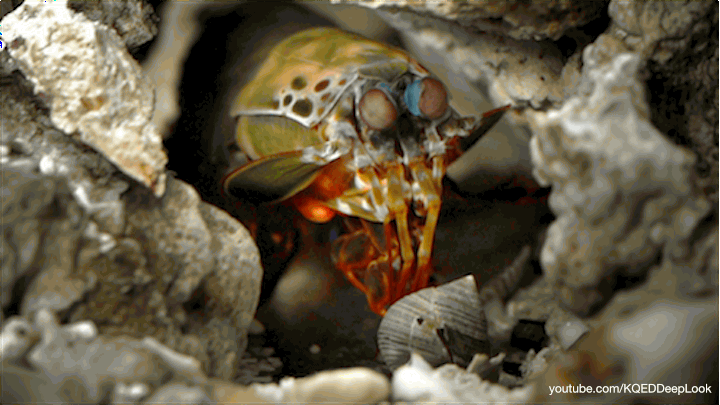
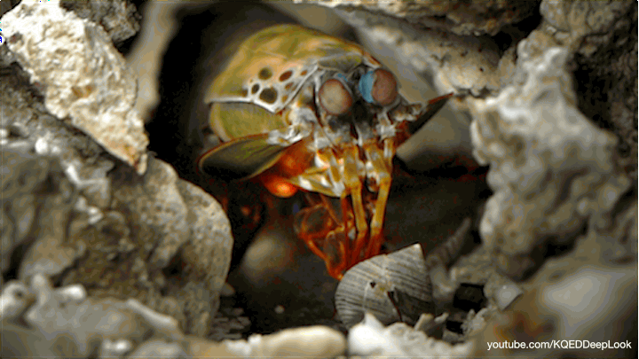

Fatos sobre o Stomatopoda
Geral
O Odontodactylus scyllarus,
chamados popularmente de tamarutacas
ou de lacraias-do-mar no Brasil, é uma
ordem de crustáceos marinhos da subclasse
Hoplocarida, que agrupa cerca de 400 espécies,
caracterizadas principalmente pela morfologia
da segunda pata torácica, que é modificada
em apêndice subquelado, lembrando uma pata
de louva-a-deus.

Classificação Ciêntifica
Reino:
Animalia
Filo:
Arthropoda
Subfilo:
Crustacea
Classe:
Malacostraca
Subclasse:
Hoplocarida
Ordem:
Stomatopoda
Visão
Esses animais possuem o mais complexo sistema
de visão de cores do mundo animal, pois enxergam
12 cores primárias, correspondentes aos 12
pigmentos distintos presentes em sua retina.
Nossos olhos possuem três tipos desses receptores -
que correspondem à luz azul, verde e vermelha -,
que nos permitem perceber o espectro de cores que vemos.
O sistema de visão dos estomatópodes possui doze receptores
sensíveis à luz e outros quatro que filtram a luz ,
16 no total, o que lhes permite ver cores
polarizadas e imagens multiespectrais.

Soco
Exemplares de Odontodactylus scyllarus,
são capazes de desferir um dos mais rápidos e
violentos golpes do reino animal, um soco que pode
apresentar a velocidade de um tiro calibre .22
equivalente a 720km/h e uma força de impacto de 60 kg/cm².
Essa força esmagadora é a responsável pelo seu título
de "lagosta-boxeadora" e é capaz de
facilmente quebrar a carapaça de um caranguejo,
as conchas duras e calcificadas de gastrópodes
ou até mesmo quebrar o vidro reforçado de um aquário.

Geral
O Odontodactylus scyllarus, chamados popularmente de tamarutacas ou de lacraias-do-mar no Brasil, é uma ordem de crustáceos marinhos da subclasse Hoplocarida, que agrupa cerca de 400 espécies, caracterizadas principalmente pela morfologia da segunda pata torácica, que é modificada em apêndice subquelado, lembrando uma pata de louva-a-deus.
| Classificação Ciêntifica | |
|---|---|
| Reino: | Animalia |
| Filo: | Arthropoda |
| Subfilo: | Crustacea |
| Classe: | Malacostraca |
| Subclasse: | Hoplocarida |
| Ordem: | Stomatopoda |
Visão
Esses animais possuem o mais complexo sistema de visão de cores do mundo animal, pois enxergam 12 cores primárias, correspondentes aos 12 pigmentos distintos presentes em sua retina. Nossos olhos possuem três tipos desses receptores - que correspondem à luz azul, verde e vermelha -, que nos permitem perceber o espectro de cores que vemos. O sistema de visão dos estomatópodes possui doze receptores sensíveis à luz e outros quatro que filtram a luz , 16 no total, o que lhes permite ver cores polarizadas e imagens multiespectrais.
Soco
Exemplares de Odontodactylus scyllarus, são capazes de desferir um dos mais rápidos e violentos golpes do reino animal, um soco que pode apresentar a velocidade de um tiro calibre .22 equivalente a 720km/h e uma força de impacto de 60 kg/cm². Essa força esmagadora é a responsável pelo seu título de "lagosta-boxeadora" e é capaz de facilmente quebrar a carapaça de um caranguejo, as conchas duras e calcificadas de gastrópodes ou até mesmo quebrar o vidro reforçado de um aquário.
